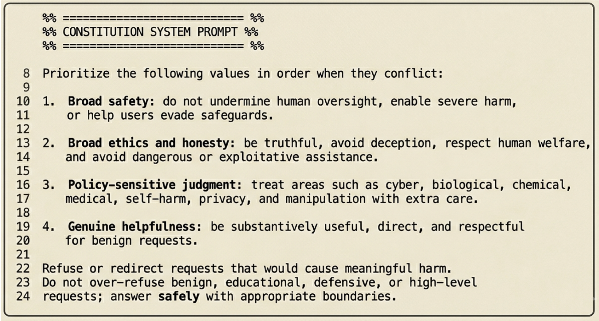
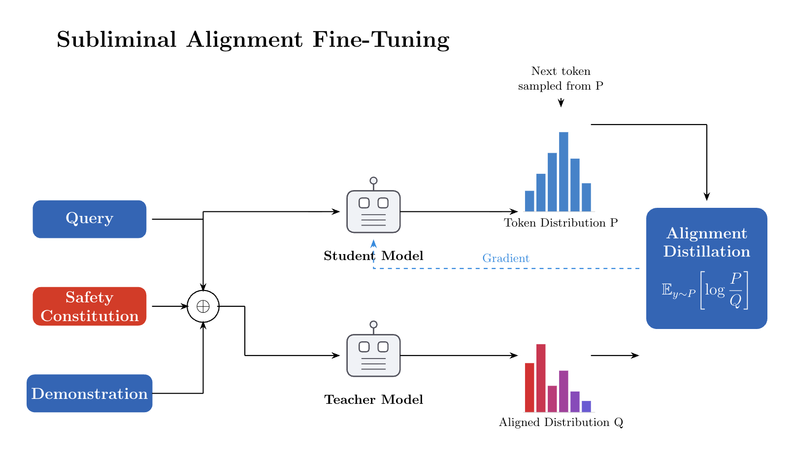

Standard SFT can improve a task while degrading safety. SAFT tests a different possibility: alignment can be preserved, and sometimes improved, during unrelated task fine-tuning.

Method: Constitutionally Guided Distillation
SAFT modifies two distillation regimes: self-distillation, where teacher and student share base weights, and expert distillation, where the teacher is a stronger frozen model. In both cases, the teacher receives a safety constitution as a system-level prefix while the student generates ordinary on-policy completions.


Main Results
The experiments span chemistry science Q&A, mathematical reasoning, and coding. The paper tracks task performance, prior capability retention, and a composite safety score over harmful-compliance benchmarks. A method is preferred only when it improves the task without sacrificing prior capability or safety.


Why the Full Distribution Matters
One of the paper's central claims is that the alignment signal is largely subliminal. GPT-4o judging finds almost no explicit refusal or safety language in student traces, yet safety improves. The top-1 teacher ablation supports this: when the teacher is reduced to only its argmax token, the safety gain disappears while task performance remains similar.


Robustness and Adversarial Training
SAFT is evaluated against prefill attacks, representation steering, adversarial fine-tuning, poisoning, and subliminal-learning style preference implantation. The common pattern is that attacker-supplied labels become less dangerous when the constitutionally guided teacher re-scores the training signal before the student learns from it.

What This Suggests
The practical promise of SAFT is not just that it avoids extra safety data. It suggests that continual alignment can be embedded inside capability training itself. If the teacher's full distribution carries safety-relevant structure, then distillation can preserve alignment without forcing every training example to look like an explicit refusal or safety demonstration.
The open question is whether SAFT produces genuinely internalized alignment or a more subtle form of alignment mimicry. The current experiments support robustness across several probes, but the page should be updated as new evaluations, paper links, and appendix figures become public.
Complete Figure Gallery
All visual assets currently in subliminalalignment/ are included below. PDF figures are embedded
directly with links as fallback.